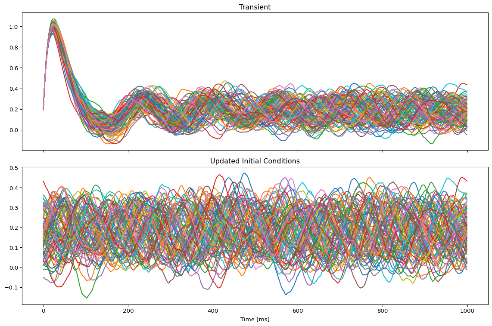
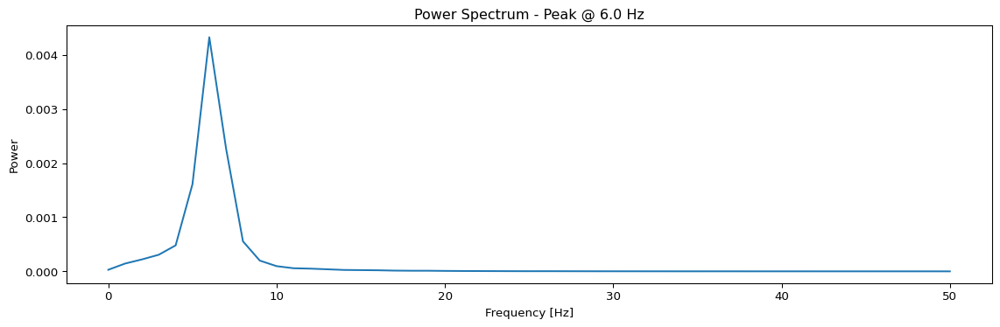
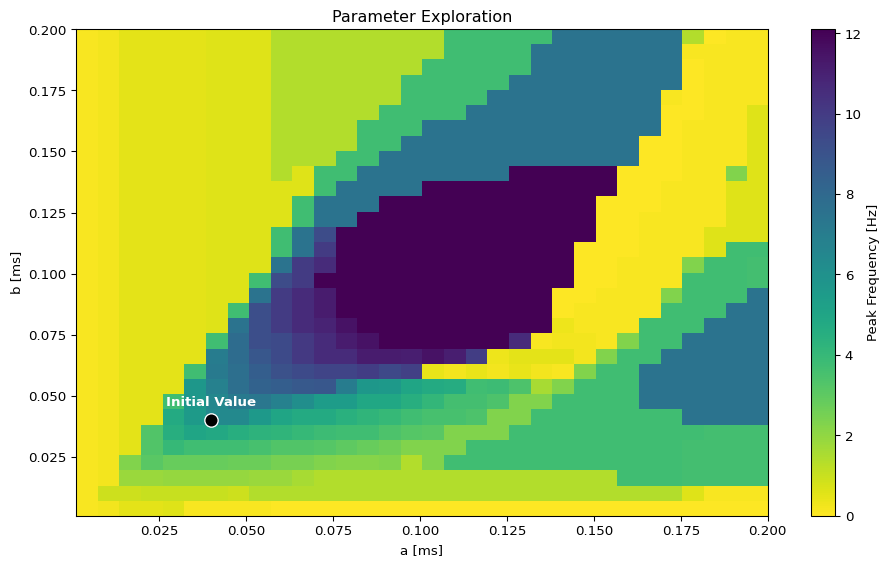
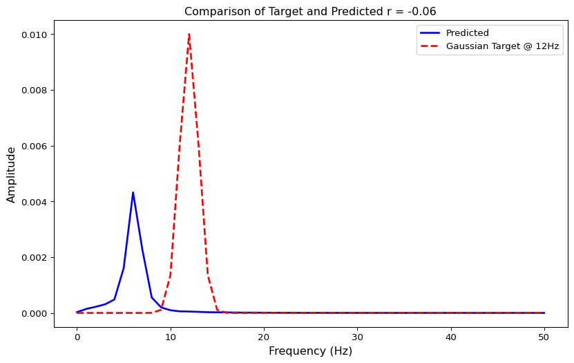
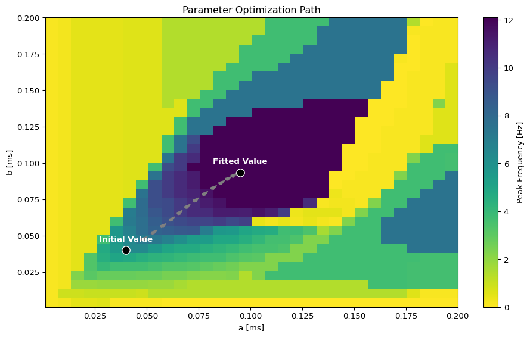
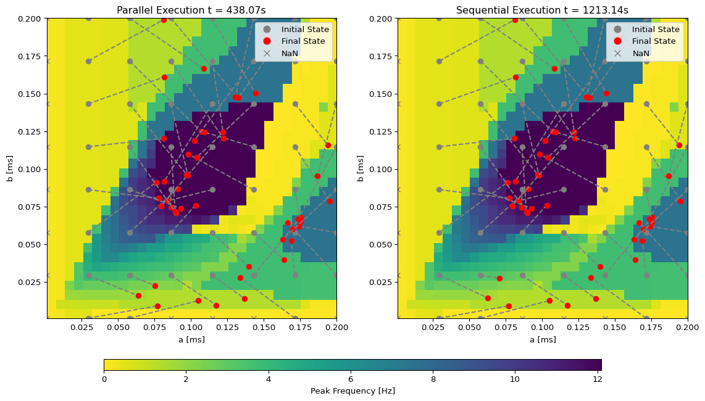

# Create experiment
exp = SimulationExperiment(
model = {
"name": "JansenRit",
"parameters": {
"a": {"name": "a", "value": 0.04},
"b": {"name": "b", "value": 0.04},
"mu": {"name": "mu", "value": 0.15}
}
},
connectivity = {
"parcellation": {"atlas": {"name": "DesikanKilliany"}},
"conduction_speed": {"name": "cs", "value": np.array([3.0])}
},
coupling = {
"name": "SigmoidalJansenRit",
"parameters": {"a": {"name": "a", "value": 20/458885}}
},
integration={
"method": "Heun",
"step_size": 1.0,
"noise": {"parameters": {"sigma": {'value': 0.001}}},
"duration": 1_000
},
monitors={"Raw": {"name": "Raw"}},
)
# Finalize configuration
exp.configure()Jansen-Rit MEG Peak Frequency Optimization
Create TVB-O Simulation Experiment
NoteTVB-O Model YAML specification
print(exp.render_yaml())id: 1
model:
name: JansenRit
parameters:
a:
name: a
value: 0.04
description: Reciprocal of the time constant of passive membrane and all other
spatially distributed delays in the dendritic network. Also called average
synaptic time constant.
unit: ms^-1
b:
name: b
value: 0.04
description: Rate constant of the inhibitory post-synaptic potential (IPSP)
unit: ms^-1
mu:
name: mu
value: 0.15
description: Mean excitatory external input to the derivative of the state-variable
y4_JR (PCs) represented by a pulse density, that consists of activity originating
from adjacent and more distant cortical columns, as well as from subcortical
structures (e
unit: ms^-1
A:
name: A
definition: Maximum amplitude of EPSP [mV]. Also called average synaptic gain.
value: 3.25
domain:
lo: 2.6
hi: 9.75
step: 0.05
description: Maximum amplitude of EPSP [mV]
unit: Millivolt
B:
name: B
definition: Maximum amplitude of IPSP [mV]. Also called average synaptic gain.
value: 22.0
domain:
lo: 17.6
hi: 110.0
step: 0.2
description: Maximum amplitude of IPSP [mV]
unit: Millivolt
J:
name: J
definition: Average number of synapses between three neuronal populations of
the model. It accounts for synaptic phenomena such as neurotransmitter depletion.
value: 135.0
domain:
lo: 65.0
hi: 1350.0
step: 1.0
description: Average number of synapses between three neuronal populations of
the model
a_1:
name: a_1
definition: Average probability constant of the number of synapses made by the
pyramidal cells to the dendrites of the excitatory interneurons (feedback
excitatory loop). It characterizes the connectivity between the PCs and EINs.
value: 1.0
domain:
lo: 0.5
hi: 1.5
step: 0.1
description: Average probability constant of the number of synapses made by
the pyramidal cells to the dendrites of the excitatory interneurons (feedback
excitatory loop)
a_2:
name: a_2
definition: Average probability constant of the number of synapses made by the
EINs to the dendrites of the PCs. It characterizes the excitatory connectivity
between the EINs and PCs.
value: 0.8
domain:
lo: 0.4
hi: 1.2
step: 0.1
description: Average probability constant of the number of synapses made by
the EINs to the dendrites of the PCs
a_3:
name: a_3
definition: Average probability constant of the number of synapses made by the
PCs to the dendrites of the IINs. It characterizes the connectivity between
the PCs and inhibitory IINs.
value: 0.25
domain:
lo: 0.125
hi: 0.375
step: 0.005
description: Average probability constant of the number of synapses made by
the PCs to the dendrites of the IINs
a_4:
name: a_4
definition: Average probability constant of the number of synapses made by the
IINs to the dendrites of the PCs. It characterizes the connectivity between
the IINs and PCs.
value: 0.25
domain:
lo: 0.125
hi: 0.375
step: 0.005
description: Average probability constant of the number of synapses made by
the IINs to the dendrites of the PCs
nu_max:
name: nu_max
definition: Asymptotic of the sigmoid function Sigm_JR corresponds to the maximum
firing rate of the neural populations.
value: 0.0025
domain:
lo: 0.00125
hi: 0.00375
step: 1.0e-05
description: Asymptotic of the sigmoid function Sigm_JR corresponds to the maximum
firing rate of the neural populations
unit: ms^-1
r:
name: r
definition: Steepness (or gain) parameter of the sigmoid function Sigm_JR.
value: 0.56
domain:
lo: 0.28
hi: 0.84
step: 0.01
description: Steepness (or gain) parameter of the sigmoid function Sigm_JR
unit: mV^-1
v0:
name: v0
definition: 'Average firing threshold (PSP) for which half of the firing rate
is achieved.
Note:
- The usual value for this parameter is 6.0 (Jansen et al., 1993; Jansen &
Rit, 1995).'
value: 5.52
domain:
lo: 3.12
hi: 6.0
step: 0.02
description: Average firing threshold (PSP) for which half of the firing rate
is achieved
unit: mV
description: 'The Jansen-Rit is a neurophysiologically-inspired neural mass model
of a cortical column (or area), developed to simulate the electrical brain activity,
i.e., the electroencephalogram (EEG), and evoked-potentials (EPs; Jansen et al.,
1993; Jansen & Rit, 1995). It is a 6-dimensional, non-linear, model describing
the local average states of three interconnected neural populations: pyramidal
cells (PCs), excitatory and inhibitory interneurons (EINs and IINs), interacting
through positive and negative feedback loops. The main output of the model is
the average membrane potential of the pyramidal cell population, as the sum of
the potential of these cells is thought to be the source of the potential recorded
in the EEG.'
derived_variables:
sigma_y0_1:
name: sigma_y0_1
description: Sigmoid function that transforms the average membrane potential
of the PCs populations (y0) into an average firing rate to the excitatory
interneurons EINs.
equation:
lhs: sigma_y0_1
rhs: 2.0*nu_max/(exp(r*(-J*a_1*y0 + v0)) + 1.0)
latex: false
conditional: false
sigma_y0_3:
name: sigma_y0_3
description: Sigmoid function that transforms the average membrane potential
of the PCs populations (y0) into an average firing rate to the inhibitory
interneurons IINs.
equation:
lhs: sigma_y0_3
rhs: 2.0*nu_max/(exp(r*(-J*a_3*y0 + v0)) + 1.0)
latex: false
conditional: false
sigma_y1_y2:
name: sigma_y1_y2
description: 'Sigmoid function that transforms the average membrane potential
of the interneurons populations (y1-y2)
into an average firing rate to the PCs.'
equation:
lhs: sigma_y1_y2
rhs: 2.0*nu_max/(exp(r*(v0 - y1 + y2)) + 1.0)
latex: false
conditional: false
coupling_terms:
c_pop0:
name: c_pop0
state_variables:
y0:
name: y0
domain:
lo: -1.0
hi: 1.0
description: First state-variable of the first Jansen-Rit population
equation:
lhs: Derivative(y0, t)
rhs: y3
latex: false
variable_of_interest: true
coupling_variable: false
initial_value: 0.1
y1:
name: y1
domain:
lo: -500.0
hi: 500.0
description: First state-variable of the second Jansen-Rit population (EINs)
equation:
lhs: Derivative(y1, t)
rhs: y4
latex: false
variable_of_interest: true
coupling_variable: true
initial_value: 0.1
y2:
name: y2
domain:
lo: -50.0
hi: 50.0
description: First state-variable of the third Jansen-Rit population (IINs)
equation:
lhs: Derivative(y2, t)
rhs: y5
latex: false
variable_of_interest: true
coupling_variable: true
initial_value: 0.1
y3:
name: y3
domain:
lo: -6.0
hi: 6.0
description: Second state-variable of the first Jansen-Rit population (excitatory
PCs)
equation:
lhs: Derivative(y3, t)
rhs: A*a*sigma_y1_y2 - a**2*y0 - 2.0*a*y3
latex: false
variable_of_interest: true
coupling_variable: false
initial_value: 0.1
y4:
name: y4
domain:
lo: -20.0
hi: 20.0
description: Second state-variable of the second excitatory Jansen-Rit population
(excitatory EINs)
equation:
lhs: Derivative(y4, t)
rhs: A*a*(J*a_2*sigma_y0_1 + c_pop0 + local_coupling*(y1 - y2) + mu) - a**2*y1
- 2.0*a*y4
latex: false
variable_of_interest: true
coupling_variable: false
initial_value: 0.1
y5:
name: y5
domain:
lo: -500.0
hi: 500.0
description: Second state-variable of the third (inhibitory) Jansen-Rit population
(IINs)
equation:
lhs: Derivative(y5, t)
rhs: B*J*a_4*b*sigma_y0_3 - b**2*y2 - 2.0*b*y5
latex: false
variable_of_interest: true
coupling_variable: false
initial_value: 0.1
number_of_modes: 1
integration:
duration: 1000.0
method: Heun
step_size: 1.0
noise:
parameters:
sigma:
name: sigma
value: 0.001
correlated: false
gaussian: false
additive: true
seed: 42
transient_time: 0.0
scipy_ode_base: false
number_of_stages: 1
intermediate_expressions:
X1:
name: X1
equation:
lhs: X1
rhs: X + dX0 * dt + noise + stimulus * dt
latex: false
conditional: false
update_expression:
name: dX
equation:
lhs: X_{t+1}
rhs: (dX0 + dX1) * (dt / 2)
latex: false
conditional: false
delayed: true
connectivity:
number_of_regions: 87
parcellation:
atlas:
name: DesikanKilliany
weights:
dataLocation: /home/marius/Documents/Projekte/Inversion/tvb-o/tvbo/data/tvbo_data/connectome/space-MNI152Nlin2009c_atlas-DesikanKilliany_desc-dTOR_weights.csv
lengths:
dataLocation: /home/marius/Documents/Projekte/Inversion/tvb-o/tvbo/data/tvbo_data/connectome/space-MNI152Nlin2009c_atlas-DesikanKilliany_desc-dTOR_lengths.csv
conduction_speed:
name: cs
value: 3.0
coupling:
name: SigmoidalJansenRit
parameters:
a:
name: a
value: 4.3583904464081416e-05
description: Scaling of the coupling term
cmax:
name: cmax
value: 0.005
description: Maximum of the Sigmoid function
r:
name: r
value: 0.56
description: The steepness of the sigmoidal transformation
cmin:
name: cmin
value: 0.0
description: minimum of the Sigmoid function
midpoint:
name: midpoint
value: 6.0
description: Midpoint of the linear portion of the sigmoid
sparse: false
pre_expression:
rhs: cmin + (cmax - cmin)/(exp(r*(midpoint - (x_j[0] - x_j[1]))) + 1.0)
latex: false
post_expression:
rhs: a*gx
latex: false
monitors:
Raw:
name: Raw
NoteRendered JAX Code
numbered_print(exp.render_code(format = "jax"))001
002 from collections import namedtuple
003 import jax
004 from tvbo.data.types import TimeSeries
005 import jax.numpy as jnp
006 import jax.scipy as jsp
007
008
009 def cfun(weights, history, current_state, p, delay_indices, t):
010 n_node = weights.shape[0]
011 a, cmax, r, cmin, midpoint = p.a, p.cmax, p.r, p.cmin, p.midpoint
012
013 x_j = jnp.array([
014
015 history[0, delay_indices[0].T, delay_indices[1]],
016
017 history[1, delay_indices[0].T, delay_indices[1]],
018
019 ])
020
021 pre = cmin + (cmax - cmin)/(1.0 + jnp.exp(r*(midpoint - x_j[0] + x_j[1])))
022 # Restore collapsed dimension if necessary
023 pre = pre.reshape(-1, n_node, n_node)
024
025 def op(x): return jnp.sum(weights * x, axis=-1)
026 gx = jax.vmap(op, in_axes=0)(pre)
027 return a*gx
028
029
030 def dfun(current_state, cX, _p, local_coupling=0):
031 a, b, mu, A, B, J, a_1, a_2, a_3, a_4, nu_max, r, v0 = _p.a, _p.b, _p.mu, _p.A, _p.B, _p.J, _p.a_1, _p.a_2, _p.a_3, _p.a_4, _p.nu_max, _p.r, _p.v0
032 # unpack coupling terms and states as in dfun
033 c_pop0 = cX[0]
034
035 y0 = current_state[0]
036 y1 = current_state[1]
037 y2 = current_state[2]
038 y3 = current_state[3]
039 y4 = current_state[4]
040 y5 = current_state[5]
041
042 # compute internal states for dfun
043 sigma_y0_1 = 2.0*nu_max/(1.0 + jnp.exp(r*(v0 - J*a_1*y0)))
044 sigma_y0_3 = 2.0*nu_max/(1.0 + jnp.exp(r*(v0 - J*a_3*y0)))
045 sigma_y1_y2 = 2.0*nu_max/(1.0 + jnp.exp(r*(v0 + y2 - y1)))
046
047 return jnp.array([
048 y3, # y0
049 y4, # y1
050 y5, # y2
051 -y0*a**2 - 2.0*a*y3 + A*a*sigma_y1_y2, # y3
052 -y1*a**2 - 2.0*a*y4 + A*a *
053 (c_pop0 + mu + local_coupling*(y1 - y2) + J*a_2*sigma_y0_1), # y4
054 -y2*b**2 - 2.0*b*y5 + B*J*a_4*b*sigma_y0_3, # y5
055 ])
056
057
058 def integrate(state, weights, dt, params_integrate, delay_indices, external_input):
059 """
060 Heun Integration
061 ================
062 """
063 t, noise = external_input
064
065 params_dfun, params_cfun, params_stimulus = params_integrate
066
067 history, current_state = state
068 stimulus = 0
069
070 cX = jax.vmap(cfun, in_axes=(None, -1, -1, None, None, None), out_axes=-
071 1)(weights, history, current_state, params_cfun, delay_indices, t)
072
073 dX0 = dfun(current_state, cX, params_dfun)
074
075 X = current_state
076
077 # Calculate intermediate step X1
078 X1 = X + dX0 * dt + noise + stimulus * dt
079
080 # Calculate derivative X1
081 dX1 = dfun(X1, cX, params_dfun)
082 # Calculate the state change dX
083 dX = (dX0 + dX1) * (dt / 2)
084 next_state = current_state + (dX) + noise
085
086 cvar = jnp.array([1, 2])
087 _h = jnp.roll(history, -1, axis=1)
088 history = _h.at[:, -1, :].set(next_state[cvar, :])
089 return (history, next_state), next_state
090
091
092 timeseries = namedtuple("timeseries", ["time", "trace"])
093
094
095 def monitor_raw_0(time_steps, trace, params, t_offset=0):
096 dt = 1.0
097 return TimeSeries(time=(time_steps + t_offset) * dt, data=trace, title="Raw")
098
099
100 def transform_parameters(_p):
101 a, b, mu, A, B, J, a_1, a_2, a_3, a_4, nu_max, r, v0 = _p.a, _p.b, _p.mu, _p.A, _p.B, _p.J, _p.a_1, _p.a_2, _p.a_3, _p.a_4, _p.nu_max, _p.r, _p.v0
102
103 return _p
104
105
106 c_vars = jnp.array([1, 2])
107
108
109 def kernel(state):
110 # problem dimensions
111 n_nodes = 87
112 n_svar = 6
113 n_cvar = 2
114 n_modes = 1
115 nh = 110
116
117 current_state, history = (
118 state.initial_conditions.data[-1], state.initial_conditions.data[-nh:, c_vars].transpose(1, 0, 2, 3))
119
120 ics = (history, current_state)
121 weights = state.connectivity.weights
122
123 dn = jnp.arange(n_nodes) * jnp.ones((n_nodes, n_nodes)).astype(int)
124 idelays = jnp.round(state.connectivity.lengths /
125 state.connectivity.metadata.conduction_speed.value / state.dt).astype(int)
126 di = -1 * idelays - 1
127 delay_indices = (di, dn)
128
129 dt = state.dt
130 nt = state.nt
131 time_steps = jnp.arange(0, nt)
132
133 key = jax.random.PRNGKey(state.noise.metadata.seed)
134 _noise = jax.random.normal(key, (nt, n_svar, n_nodes, n_modes))
135 noise = (jnp.sqrt(dt) * state.noise.sigma[None, ..., None, None]) * _noise
136
137 p = transform_parameters(state.parameters.model)
138 params_integrate = (p, state.parameters.coupling, state.stimulus)
139
140 def op(ics, external_input): return integrate(ics, weights,
141 dt, params_integrate, delay_indices, external_input)
142
143 latest_carry, res = jax.lax.scan(op, ics, (time_steps, noise))
144
145 trace = res
146
147 t_offset = 0
148 time_steps = time_steps + 1
149
150 params_monitors = state.monitor_parameters
151 result = monitor_raw_0(
152 time_steps, trace, params_monitors[0], t_offset=t_offset),
153
154 result = [result[0]]
155 return result
NoteTVB-O Model Report
display(Markdown(exp.model.generate_report()))JansenRit
The Jansen-Rit is a neurophysiologically-inspired neural mass model of a cortical column (or area), developed to simulate the electrical brain activity, i.e., the electroencephalogram (EEG), and evoked-potentials (EPs; Jansen et al., 1993; Jansen & Rit, 1995). It is a 6-dimensional, non-linear, model describing the local average states of three interconnected neural populations: pyramidal cells (PCs), excitatory and inhibitory interneurons (EINs and IINs), interacting through positive and negative feedback loops. The main output of the model is the average membrane potential of the pyramidal cell population, as the sum of the potential of these cells is thought to be the source of the potential recorded in the EEG.
Equations
Derived Variables
\[ \sigma_{y0 1} = \frac{2.0*\nu_{max}}{1.0 + e^{r*\left(v_{0} - J*a_{1}*y_{0}\right)}} \] \[ \sigma_{y0 3} = \frac{2.0*\nu_{max}}{1.0 + e^{r*\left(v_{0} - J*a_{3}*y_{0}\right)}} \] \[ \sigma_{y1 y2} = \frac{2.0*\nu_{max}}{1.0 + e^{r*\left(v_{0} + y_{2} - y_{1}\right)}} \]
State Equations
\[ \frac{d}{d t} y_{0} = y_{3} \] \[ \frac{d}{d t} y_{1} = y_{4} \] \[ \frac{d}{d t} y_{2} = y_{5} \] \[ \frac{d}{d t} y_{3} = - y_{0}*a^{2} - 2.0*a*y_{3} + A*a*\sigma_{y1 y2} \] \[ \frac{d}{d t} y_{4} = - y_{1}*a^{2} - 2.0*a*y_{4} + A*a*\left(c_{global} + \mu + c_{local}*\left(y_{1} - y_{2}\right) + J*a_{2}*\sigma_{y0 1}\right) \] \[ \frac{d}{d t} y_{5} = - y_{2}*b^{2} - 2.0*b*y_{5} + B*J*a_{4}*b*\sigma_{y0 3} \]
Parameters
| Parameter | Value | Unit | Description |
|---|---|---|---|
| \(a\) | 0.04 | ms^-1 | Reciprocal of the time constant of passive membrane and all other spatially distributed delays in the dendritic network. Also called average synaptic time constant. |
| \(b\) | 0.04 | ms^-1 | Rate constant of the inhibitory post-synaptic potential (IPSP) |
| \(\mu\) | 0.15 | ms^-1 | Mean excitatory external input to the derivative of the state-variable y4_JR (PCs) represented by a pulse density, that consists of activity originating from adjacent and more distant cortical columns, as well as from subcortical structures (e |
| \(A\) | 3.25 | Millivolt | Maximum amplitude of EPSP [mV] |
| \(B\) | 22.0 | Millivolt | Maximum amplitude of IPSP [mV] |
| \(J\) | 135.0 | N/A | Average number of synapses between three neuronal populations of the model |
| \(a_{1}\) | 1.0 | N/A | Average probability constant of the number of synapses made by the pyramidal cells to the dendrites of the excitatory interneurons (feedback excitatory loop) |
| \(a_{2}\) | 0.8 | N/A | Average probability constant of the number of synapses made by the EINs to the dendrites of the PCs |
| \(a_{3}\) | 0.25 | N/A | Average probability constant of the number of synapses made by the PCs to the dendrites of the IINs |
| \(a_{4}\) | 0.25 | N/A | Average probability constant of the number of synapses made by the IINs to the dendrites of the PCs |
| \(\nu_{max}\) | 0.0025 | ms^-1 | Asymptotic of the sigmoid function Sigm_JR corresponds to the maximum firing rate of the neural populations |
| \(r\) | 0.56 | mV^-1 | Steepness (or gain) parameter of the sigmoid function Sigm_JR |
| \(v_{0}\) | 5.52 | mV | Average firing threshold (PSP) for which half of the firing rate is achieved |
References
Jansen, B., Zouridakis, G., & Brandt, M. (1993). A neurophysiologically-based mathematical model of flash visual evoked potentials. Biological Cybernetics, 68(3), 275-283.
Jansen, B. & Rit, V. (1995). Electroencephalogram and visual evoked potential generation in a mathematical model of coupled cortical columns. Biological Cybernetics, 73(4), 357-366.
Model Functions
# Get model and parameters
model, state = jaxify(exp)Run Initial Simulation
# Run the model and get results
result = model(state)
# Use first result as initial conditions for second run
state.initial_conditions = result[0]
result2 = model(state)
Spectral Analysis Functions
def avg_spectrum(state):
raw = model(state)[0]
# Subsample by a factor of 10
f, Pxx = jax.scipy.signal.welch(raw.data[::10, 0, :, 0].T, fs=100)
avg_spectrum = jnp.mean(Pxx, axis=0)
return f, avg_spectrum
def peak_freq(state):
f, S = avg_spectrum(state)
idx = jnp.argmax(S)
f_max = f[idx]
return f_max
# Calculate and display spectrum
f, S = jax.block_until_ready(avg_spectrum(state))
Parameter Exploration
# Set up parameter ranges for exploration
state.parameters.model.a.free = True
state.parameters.model.a.low = 0.001
state.parameters.model.a.high = 0.2
state.parameters.model.b.free = True
state.parameters.model.b.low = 0.001
state.parameters.model.b.high = 0.2
show_free_parameters(state)
# Create grid for parameter exploration
n = 32
_params = copy.deepcopy(state)
_params.nt = 10_000 # 10s simulation for better frequency resolution
params_set = GridSpace(_params, n=n)
@cache("explore", redo = False)
def explore():
parexec = zarallelExecution(peak_freq, params_set, n_pmap=8)
return parexec.run()
# Alternative: Sequential execution
# sqexec = SequentialExecution(jax.jit(peak_freq), params_set)
# return sqexec.run()
exploration_result = explore()Visualize Exploration Results

Create Target Spectrum

Define Loss Function
# Define loss function as 1 minus correlation coefficient
def loss(state):
f, S = avg_spectrum(state)
return 1-jnp.corrcoef(S, target)[0, 1]
# Test loss function
loss(state)Array(1.06076007, dtype=float64)Run Optimization
# Create and run optimizer
cb = MultiCallback([
DefaultPrintCallback(),
SavingCallback(key = "state", save_fun = lambda *args: args[1]) # save updated state
])
@cache("optimize", redo = False)
def optimize():
opt = OptaxOptimizer(loss, optax.adam(0.005), callback = cb)
fitted_params, fitting_data = opt.run(state, max_steps=15)
return fitted_params, fitting_data
fitted_params, fitting_data = optimize()Visualize Optimization Results

Fit the Grid
# Create grid for parameter exploration
n_grid = 8
params_set = GridSpace(state, n=n_grid)
@cache("optimize_grid", redo = False)
def optimize_grid():
opt = OptaxOptimizer(loss, optax.adam(0.0025))
# exec = SequentialExecution(opt.run, params_set, max_steps=20)
t1 = time.time()
exec = ParallelExecution(opt.run, params_set, n_pmap=4, max_steps=20)
res = exec.run()
t2 = time.time()
return (t2-t1), res
t, res = optimize_grid()
t/tmp/ipykernel_152823/1938800275.py:72: UserWarning:
This figure includes Axes that are not compatible with tight_layout, so results might be incorrect.
